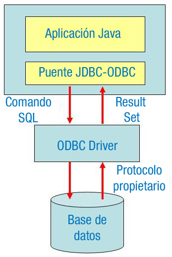
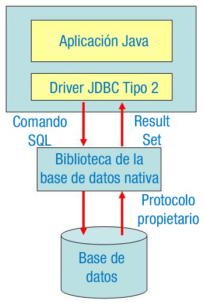
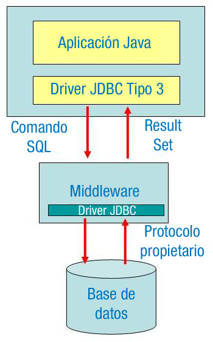
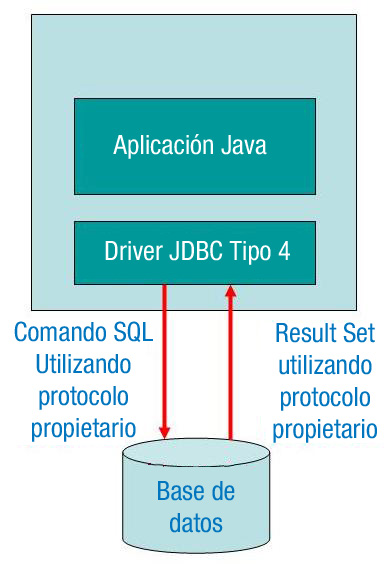

Un conector o driver es un conjunto de clases encargadas de implementar los interfaces del API y acceder a la base de datos.
Para poder conectarse a una base de datos y lanzar consultas, una aplicación necesita tener un driver adecuado. Un conector suele ser un fichero .jar que contiene una implementación de todas las interfaces del API JDBC.
Cuando se construye una aplicación de base de datos, JDBC oculta lo específico de cada base de datos, de modo que el programador se ocupe sólo de su aplicación.
El conector lo proporciona el fabricante de la base de datos o bien un tercero.
El código de nuestra aplicación no depende del driver, puesto que trabajamos mediante los paquetes java.sql y javax.sql.
JDBC ofrece las clases e interfaces para:
- Establecer una conexión a una base de datos.
- Ejecutar una consulta.
- Procesar los resultados.
Ejemplo:
// Establece la conexión
Connection con = DriverManager.getConnection ("jdbc:odbc:miBD",
"miLogin", "miPassword" );
// Ejecuta la consulta
Statement stmt = (Statement) con.createStatement();
ResultSet rs = stmt.executeQuery("SELECT nombre, edad FROM Empleados");
// Procesa los resultados
while (rs.next()) {
String nombre = rs.getString("nombre");
int edad = rs.getInt("edad");
}En principio, todos los conectores deben ser compatibles con ANSI SQL-2 Entry Level (ANSI SQL-2 se refiere a los estándares adoptados por el American National Standards Institute en 1992. Entry Level se refiere a una lista específica de capacidades de SQL.) Los desarrolladores de drivers pueden establecer que sus conectores conocen estos estándares.
Hay cuatro tipos de drivers JDBC: Tipo 1, Tipo 2, Tipo 3 y Tipo 4.
Tipo 1: JDBC-ODBC Bridge
Proporcionan un puente entre el API JDBC y el API ODBC. El driver JDBC-ODBC Bridge traduce las llamadas JDBC a llamadas ODBC y las envía a la fuente de datos ODBC.
{kind=link}
Como ventajas destacar:
- No se necesita un driver específico de cada base de datos de tipo ODBC.
- Está soportado por muchos fabricantes, por lo que tenemos acceso a muchas Bases de Datos.
Como desventajas señalar:
- Hay plataformas que no lo tienen implementado.
- El rendimiento no es óptimo ya que la llamada JDBC se realiza a través del puente hasta el conector ODBC y de ahí al interface de conectividad de la base de datos. El resultado recorre el camino inverso.
- Se tiene que registrar manualmente en el gestor de ODBC teniendo que configurar el DSN (Data Source Names, Nombres de fuentes de datos).
Este tipo de driver va incluido en el JDK.
Tipo 2: API nativa
Convierten las llamadas JDBC a llamadas específicas de la base de datos para bases de datos como SQL Server, Informix, Oracle, o Sybase.
{kind=link}
El conector tipo 2 se comunica directamente con el servidor de bases de datos, por lo que es necesario que haya código en la máquina cliente.
Como ventaja, este conector destaca por ofrecer un rendimiento notablemente mejor que el JDBC-ODBC Bridge.
Como inconveniente, señalar que la librería de la bases de datos del vendedor necesita cargarse en cada máquina cliente. Por esta razón los drivers tipo 2 no pueden usarse para Internet.
Los drivers Tipo 1 y 2 utilizan código nativo vía JNI, por lo que son más eficientes.
Tipo 3: JDBC-Net pure Java driver.
Tiene una aproximación de tres capas. Las peticiones JDBC a la base de datos se pasan a través de la red al servidor de la capa intermedia (middleware). Este servidor traduce este protocolo independiente del sistema gestor a protocolo específico del sistema gestor y se envía a la base de datos. Los resultados se mandan de vuelta al middleware y se enrutan al cliente.
Es útil para aplicaciones en Internet.
Este driver está basado en servidor, por lo que no se necesita ninguna librería de base de datos en las máquinas clientes.
Normalmente, un driver de tipo 3 proporciona soporte para balanceo de carga, funciones avanzadas de administrador de sistemas tales como auditoría, etc.
Tipo 4: Protocolo nativo.
En este caso se trata de conectores que convierten directamente las llamadas JDBC al protocolo de red usando por el sistema gestor de la base de datos. Esto permite una llamada directa desde la máquina cliente al servidor del sistema gestor de base de datos y es una solución excelente para acceso en intranets.
{kind=link}
Como ventaja se tiene que no es necesaria traducción adicional o capa middleware, lo que mejora el rendimiento, siendo éste mejor que en el caso de los tipos 1 y 2.
Además, no se necesita instalar ningún software especial en el cliente o en el servidor.
Como inconveniente, de este tipo de conectores, el usuario necesita un driver diferente para cada base de datos.
Un ejemplo de este tipo de conector es Oracle Thin.
Los tipos 3 y 4 son la mejor forma de acceder a bases de datos JDBC.